Come l'hardware si trasforma in intelligenza logica: porte logiche, MUX, il complemento a 2 implementato fisicamente, e la genialità dietro l'istruzione slt e l'Overflow.
23
I Mattoni Logici
Siamo scesi al Livello 0: qui il computer è solo un intricato sistema di tubature elettriche (0 Volt = Falso, 5 Volt = Vero). La matematica si costruisce "dirottando" questa elettricità tramite le Porte Logiche.
Circuiti Combinatori vs Sequenziali
In elettronica, i circuiti si dividono in due grandi famiglie:
Circuiti Combinatori
Non hanno memoria. L'uscita in questo esatto momento dipende esclusivamente da cosa c'è in ingresso in questo esatto momento. Come una calcolatrice semplice: digiti 2+2, esce 4. È istantaneo e "senza passato". (Es: ALU, Decoder, MUX).
Circuiti Sequenziali
Hanno memoria. L'uscita dipende dagli ingressi attuali e da quello che è successo in passato. Usano il segnale di Clock (il metronomo) per decidere quando aggiornare i propri dati. (Es: RAM, Registri, Flip-Flop).
Le Porte Logiche Base
I circuiti combinatori si costruiscono incastrando miliardi di transistor configurati per formare queste "porte" elementari:
AND Esce 1 solo se TUTTI gli ingressi sono 1
OR Esce 1 se ALMENO UN ingresso è 1
NOT Ribalta il segnale (1 diventa 0)
XOR Esce 1 solo se gli ingressi sono DIVERSI
Il Decoder 3 a 8 (Il Cecchino)
Un Decoder riceve un numero binario in ingresso (es. 3 bit: A, B, C) e "accende" esattamente una sola linea di uscita (tra le 23 = 8 possibili). È il cuore della memoria RAM, perché permette di selezionare la singola riga di celle desiderata partendo dall'indirizzo.
Come funziona il circuito:
Gli Ingressi (A, B, C): A sinistra entrano i 3 bit. Ognuno si sdoppia: un percorso prosegue invariato, l'altro passa per una porta NOT (il triangolo) che ne inverte il valore.
I Cavi Verticali: Si vengono a creare 6 fili verticali che trasportano il segnale normale e invertito per ogni lettera.
Le 8 Porte AND: A destra ci sono 8 porte logiche AND. Ogni porta è "cablata" in modo univoco a 3 fili verticali. Ad esempio, la porta D0 è collegata alle linee invertite di tutti e 3 gli ingressi.
La Magia Matematica: Una porta AND emette '1' solo se riceve tutti '1'. Grazie al cablaggio perfetto, per ogni possibile combinazione in entrata (da 000 a 111), soltanto una singola porta AND riceverà contemporaneamente tre '1', attivando la sua uscita corrispondente. Tutte le altre 7 resteranno spente.
Analisi Visiva: Schema del Decoder
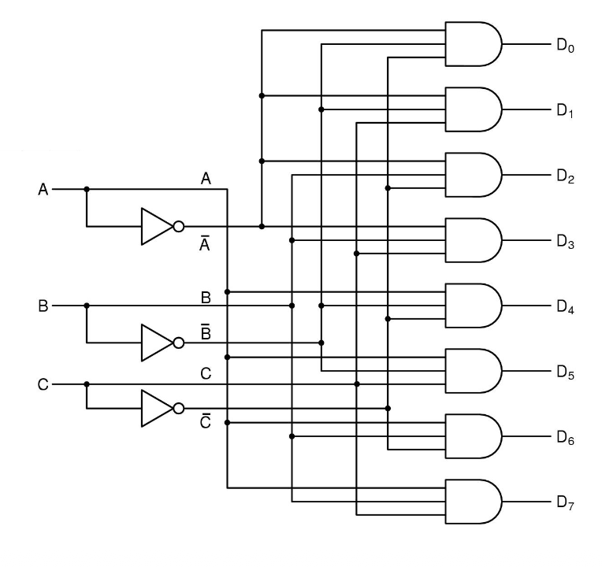
Il Simbolo del Decoder: Nei diagrammi di architettura ad alto livello, l'intero labirinto di porte logiche viene riassunto in questo semplice blocco costruttivo.
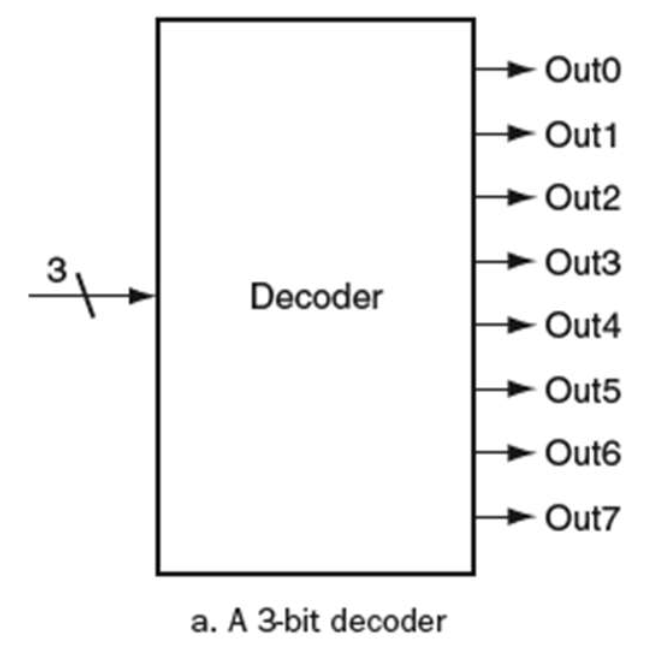
Il Multiplexer 8 a 1 (Lo Scambio Ferroviario)
Il MUX (Multiplexer) fa l'esatto opposto del Decoder: riceve svariati fili dati in ingresso, ma ne fa passare solo uno verso l'uscita. I fili di "Select" decidono quale dei cancelli verrà sbloccato. È essenziale nella CPU per prendere decisioni di routing stradale (es. mandiamo all'ALU il valore del Registro o una Costante?).
La Regola Matematica del MUX: La relazione tra i fili di controllo (Selettori) e i fili Dati è rigidissima. Con n fili di controllo, il circuito può gestire esattamente 2n ingressi dati. Nello schema sottostante abbiamo 3 selettori (A, B, C), quindi il MUX può "scegliere" tra 23 = 8 ingressi Dati!
Come funziona il circuito:
I Dati (D0-D7): A sinistra entrano gli 8 cavi che trasportano i vari dati possibili. Ognuno finisce direttamente in una porta AND.
I Selettori (A, B, C): In basso entrano i 3 fili di controllo. Anche in questo caso si sdoppiano in linee verticali normali e negate (passando per i NOT).
La "Serratura" AND: Ogni porta AND riceve 4 fili: 1 cavo dati e 3 cavi di controllo. Solo una porta AND alla volta riceverà dai cavi di controllo la combinazione magica 1-1-1.
Il passaggio del Dato: La singola porta AND "sbloccata" lascerà passare il segnale del suo cavo dati. Tutte le altre porte AND resteranno sbarrate a 0.
La grande porta OR: Raccoglie i risultati di tutte le 8 porte AND. Poiché 7 porte emettono 0 e solo 1 emette il segnale del dato, l'uscita finale `F` sarà esattamente uguale al dato selezionato!
Analisi Visiva: Schema del Multiplexer
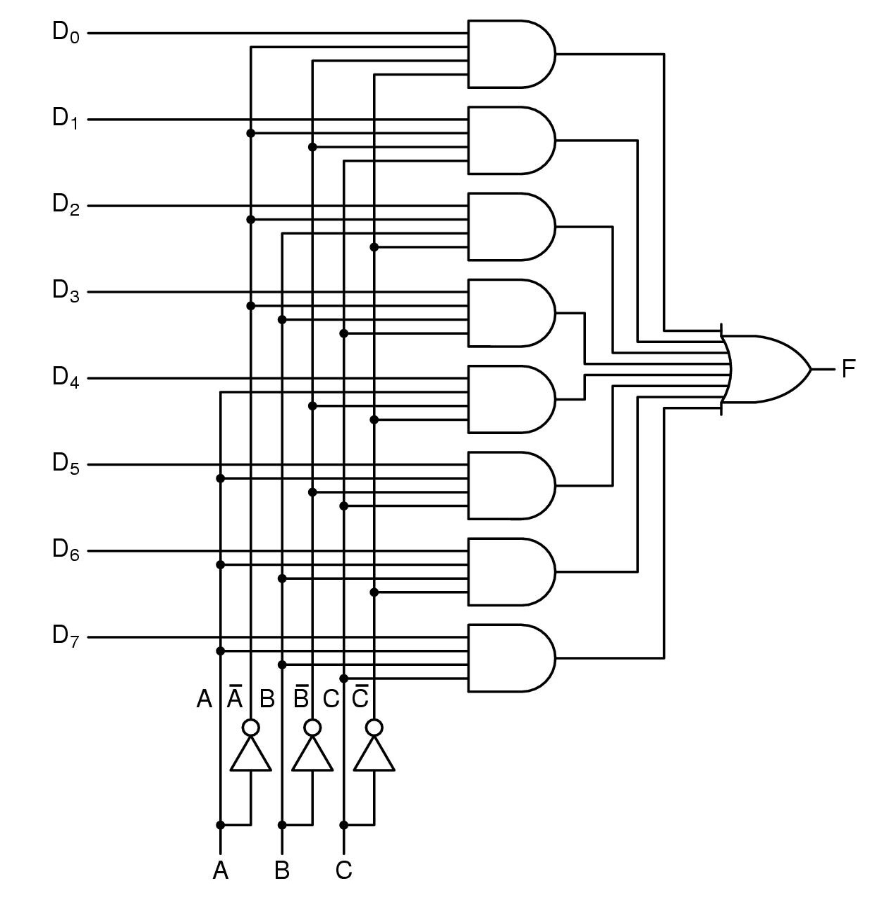
Il Segreto dell'Hardware: I 32 Multiplexer in Parallelo
In un processore RISC-V a 32 bit, i "fili" nei diagrammi non sono fili singoli, ma Bus: nastri composti da 32 fili microscopici paralleli. Come fa la CPU a deviare l'intero traffico di un bus a 32 bit?
Non esiste un unico "Super MUX"! Gli ingegneri usano la forza bruta: piazzano 32 piccoli Multiplexer (da 2-a-1) messi fisicamente uno di fianco all'altro. Il primo MUX si occupa esclusivamente di far passare il bit 0. Il secondo MUX fa passare il bit 1, e così via fino al bit 31.
La genialità? Il cavo di Controllo (il deviatore) è uno solo, ma viene sdoppiato e collegato al pin "Select" di tutti e 32 i MUX contemporaneamente! Quando l'Unità di Controllo manda un '1' su quel cavo, tutti e 32 i cancelli scattano all'unisono, deviando l'intero numero di 32 bit in un istante perfetto.
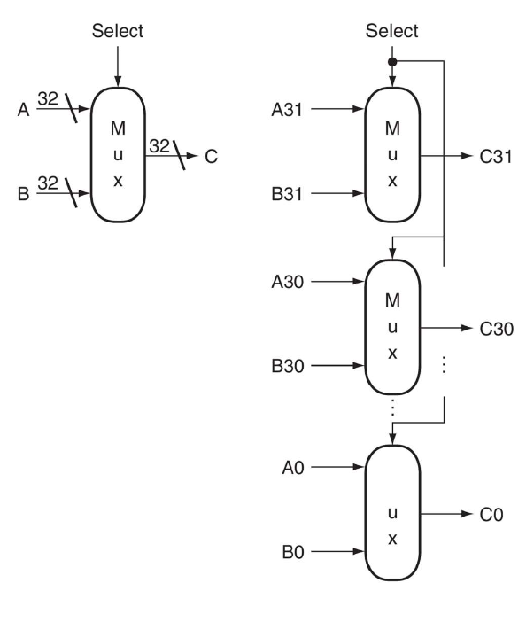
24
Gli Addizionatori e ALU 1-bit
L'obiettivo primario della CPU è calcolare. Ma come si costruisce un circuito in grado di sommare numeri binari usando solo le porte logiche di base (AND, OR, XOR)?
L'Half Adder (Mezzo Addizionatore)
Se vogliamo sommare due bit singoli (es. 1 + 1), abbiamo due risultati possibili: la Somma (che vale 0) e il Riporto (Carry, che vale 1). Il circuito più semplice per farlo è l'Half Adder, che usa esattamente due porte logiche in parallelo:
Porta XOR per la Somma: Ricordi? L'XOR vale 1 solo se gli ingressi sono diversi. Infatti: 0+0=0, 0+1=1, 1+0=1. E 1+1? Fa 0 col riporto di 1! L'XOR per 1 e 1 dà giustamente 0.
Porta AND per il Riporto (CarryOut): L'AND vale 1 solo se tutti gli ingressi sono 1. Infatti il riporto scatta a 1 solo quando sommiamo 1 e 1.
Analisi Visiva: Half Adder
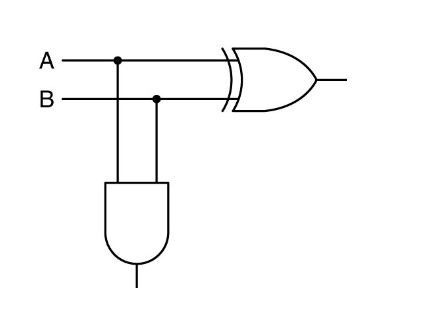
Il Full Adder (Addizionatore Completo)
L'Half Adder va bene per il primo bit, ma per sommare i bit successivi di un numero lungo ci serve un circuito in grado di accettare un terzo ingresso: il CarryIn (il riporto generato dalla colonna precedente).
Il Full Adder si costruisce mettendo in cascata due Half Adder e una porta OR. È in grado di sommare tre bit (A, B e CarryIn) e sputare fuori il Risultato e il CarryOut.
Analisi Visiva: Full Adder
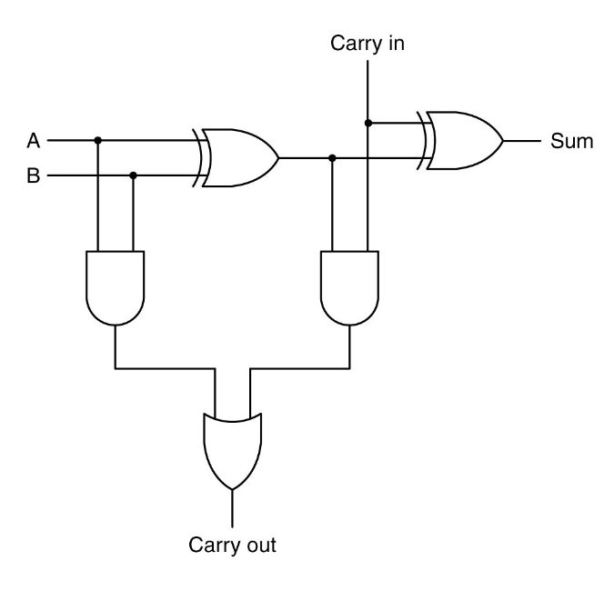
25
L'Evoluzione dell'ALU
Non possiamo studiare un'ALU a 32 bit guardandola tutta intera: esploderebbe il cervello. Dobbiamo costruirla pezzo per pezzo, partendo da un singolo bit debole e potenziandolo ad ogni ostacolo. Esplora le fasi qui sotto!
Fase 1: L'ALU "Neanderthal"
1 / 5
Scopo: Costruire un'ALU primordiale per eseguire solo 3 calcoli (AND, OR, Somma).
Costruzione: Si piazzano in parallelo una porta AND, una porta OR e un Full Adder.
Il Controllo: I segnali entrano in tutti e tre i blocchi. Un Multiplexer a 3 vie, guidato dal filo Operation, sceglie l'unico risultato da far uscire.
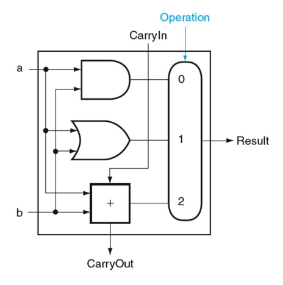
Testa l'ALU Base:
A
B
Cin
0Res
0Cout
Il Problema delle Operazioni Inverse
Il Problema: L'ALU base non sa calcolare la Sottrazione né il NOR logico.
La Soluzione: Sfruttare l'addizionatore col Complemento a 2 (inverti i bit + somma 1).
Hardware: Vengono piazzati due piccoli MUX in ingresso. Ognuno funge da deviatore tra il segnale normale e il segnale capovolto da una porta NOT.
Il miracolo di B-negate e A-invert
Quando ordini una Sottrazione, il filo B-negate devia B nel NOT e forza a 1 il CarryIn iniziale dell'addizionatore. Ma perché aggiungere anche A-invert? Appositamente per creare il NOR! Secondo le leggi di De Morgan, invertendo sia A che B e facendoli passare per la porta AND, si ottiene matematicamente (NOT A) AND (NOT B) = A NOR B. Un intero circuito risparmiato!
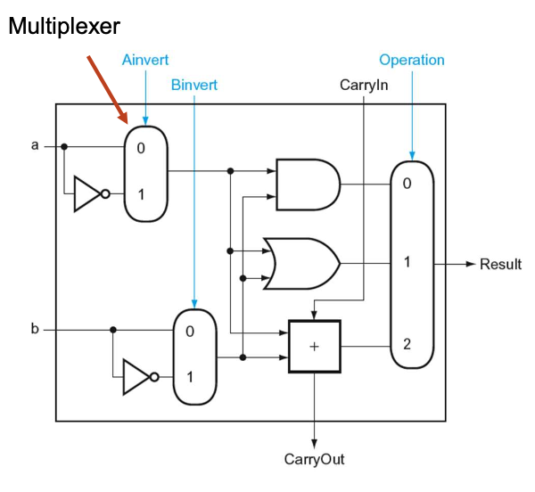
Il Problema "Set Less Than" (SLT)
L'Obiettivo: Rispondere alla domanda A < B (istruzione slt).
Il Metodo: L'hardware calcola A - B. Se il risultato è negativo, A era minore di B.
Il Problema: Il "segno negativo" esiste solo nell'ultima ALU (bit 31). Dobbiamo sdoppiare il design!
1. Prime 31 ALU (Bit 0-30)
Il quarto canale Less viene saldato a Terra (valore 0). In slt, i primi 31 bit sputano istantaneamente zero!
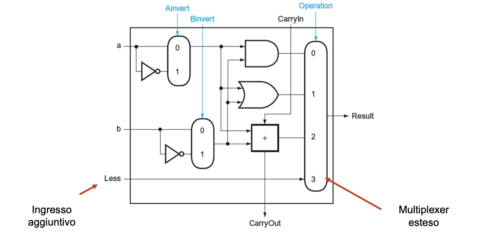
2. La 32esima ALU (Bit Segno)
Ha un tubo di scappamento speciale Set: ruba il bit del segno direttamente dall'addizionatore.
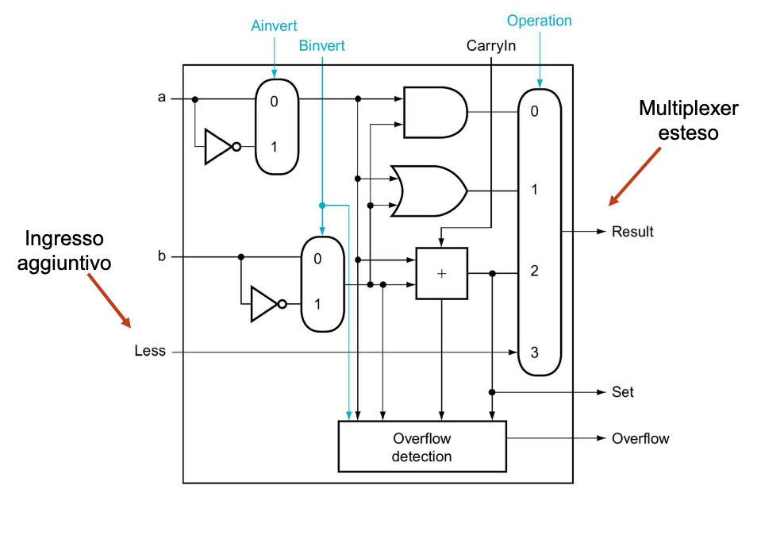
La Cucitura (Set ➔ Less)
Un lunghissimo cavo di rame prende il bit dal Set in cima (la 32esima ALU) e lo inietta brutalmente nel Less della primissima ALU (la ALU 0) in basso. Risultato? 31 zeri + il bit del segno.
Il Problema dello "Strabordamento" (Overflow)
L'Errore: Sommando numeri enormi, si invade il bit del segno. Il PC crede che il risultato positivo sia negativo: è l'Overflow.
La Scoperta: C'è Overflow solo quando il CarryIn dell'ultimo bit differisce dal CarryOut dell'ultimo bit.
La Soluzione: Si piazza una singola porta XOR a cavallo dei due Carry. Se sono diversi, scatta l'allarme!
La 32esima ALU
Questa è l'ALU che processa l'ultimo bit (il bit del segno).
L'Allarme Overflow
Aggiungendo la porta XOR ai due segnali di Carry, si intercetta l'errore.
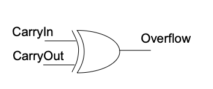
Il Problema del Salto (L'ALU Definitiva)
Il Requisito: L'istruzione beq (Branch if Equal) deve saltare se A = B.
La Soluzione: L'ALU viene semplicemente istruita a eseguire una sottrazione normale (A - B). I 32 fili del risultato entrano in un titanico NOR a 32 vie.
Il Ruolo della Control Unit (CU): L'ALU non ha un'operazione specifica per il beq. Si limita a sottrarre. È la Control Unit che legge l'allarme Zero sputato dal NOR: se è '1' (cioè il risultato della sottrazione era tutto zeri), la CU capisce che i numeri erano uguali e fa scattare il salto!
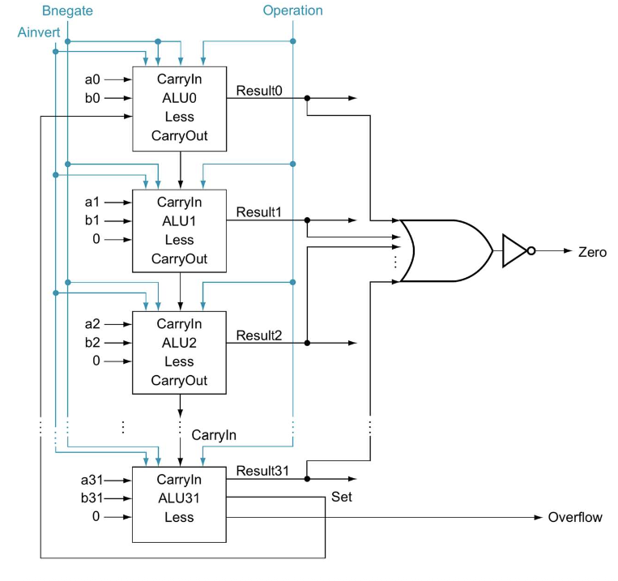
Controllo Operazioni ALU
La Control Unit invia 4 bit di comando (1 per A-invert, 1 per B-negate, 2 per Operation) combinati per decidere cosa far fare all'ALU:
ALU control lines
Function
0000
AND
0001
OR
0010
add
0110
subtract
0111
set less than
1100
NOR
La Scatola Nera
D'ora in poi, l'intero labirinto di circuiti sparirà, diventando quel glorioso simbolo a "V" (visibile qui sotto) completo dei pin Control, Result, Zero e Overflow.
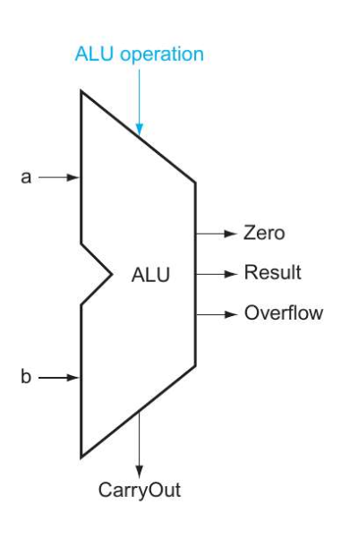
26
L'Evoluzione della Memoria
L'ALU calcola ma non ricorda. Seguiamo l'evoluzione dei circuiti di memoria (Circuiti Sequenziali): dalla forma più elementare instabile fino al sofisticato Flip-Flop utilizzato nelle CPU vere.
Fase 1: Il Latch SR
1 / 6
Il Latch SR è formato da due porte NOR incrociate (l'uscita di una è l'ingresso dell'altra).
Set (S=1) accende la memoria a 1. Reset (R=1) la spegne a 0.
Hold (S=0, R=0) chiude gli ingressi, mantenendo il segnale intrappolato nel loop.
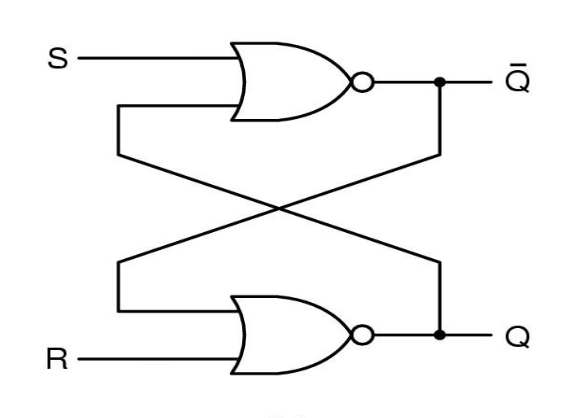
⚠️ Caso Vietato (S=1, R=1): Se si attivano Set e Reset assieme e si rilasciano contemporaneamente, le due NOR si rincorrono in un loop infinito e imprevedibile (oscillazione).
Perché inventare il Clock? (Il problema del Transitorio)
Il Latch base è "sempre in ascolto", ed è un problema a causa della fisica dei circuiti:
Strade diverse, tempi diversi: S e R provengono da un labirinto di calcoli. Se S attraversa 1 sola porta ci mette 1ns ad arrivare; se R ne attraversa 5 ci mette 5ns.
Il "Tremolio": Se l'obiettivo finale è S=1 e R=0, al nanosecondo 1 la S è già a 1, ma la R è in ritardo e magari vale ancora 1 per un vecchio calcolo. Per ben 4 nanosecondi il Latch vedrebbe S=1 e R=1 (il caso vietato!), impazzendo.
La Soluzione: Il Clock (Il Cancello)
Aggiungiamo un interruttore generale. Il Clock funge da cancello chiuso: aspetta pazientemente (es. 10ns) che tutti i calcoli abbiano finito di tremolare e si siano stabilizzati. Solo a quel punto si apre (C=1) e lascia entrare i dati corretti nel Latch.
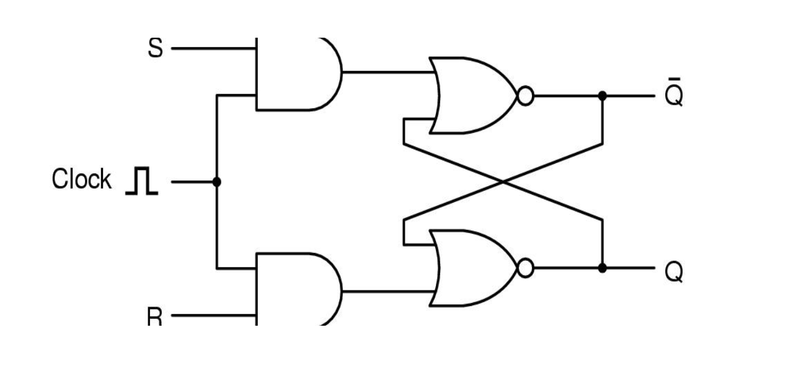
Latch D Sincronizzato
Il Problema: L'utente può ancora sbagliare e premere S=1 e R=1, mandando il Latch in oscillazione.
La Soluzione: Eliminiamo il doppio comando! Creiamo un solo ingresso Data (D). Il segnale D entra diretto nel Set, e invertito (tramite un NOT) nel Reset.
Risultato: È matematicamente impossibile che Set e Reset valgano 1 contemporaneamente. Assicurazione totale.
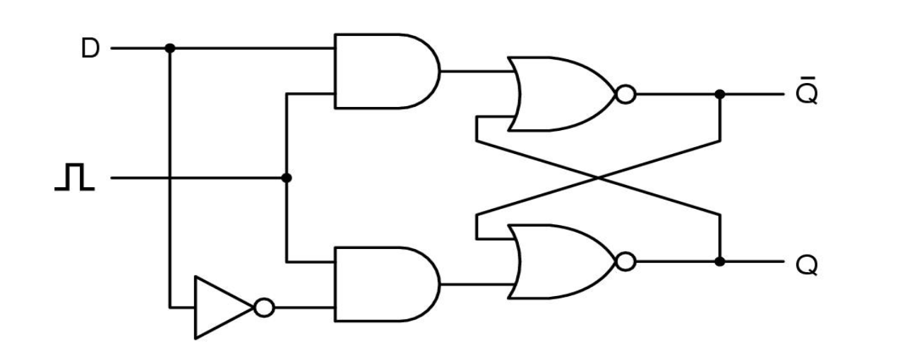
Diagramma Temporale & Trasparenza
Il Manuale di Istruzioni (Il Diagramma)
Ritardo di propagazione (Frecce blu): L'uscita Q non scatta istantaneamente; c'è un leggero scivolamento a destra (il tempo fisico di attraversamento delle porte).
Setup Time (Tempo di preparazione): D deve essersi già stabilizzato prima che C (linea rossa) diventi alto. D non può cambiare nell'esatto istante in cui sale C, andrebbe in confusione!
Hold Time (Tempo di mantenimento): Quando C torna a 0 chiudendo il cancello, D deve rimanere fisso ancora un po' dopo, altrimenti il segnale "scivola via dalle mani" mentre la porta si sta chiudendo.
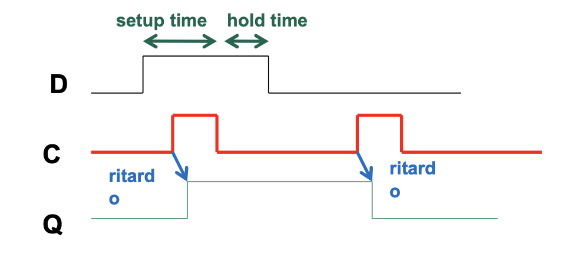
Il Problema Trasparenza (Effetto Flipper) Quando C=1 il Latch D è "trasparente". Immagina un Contatore ad anello che fa +1 ad ogni battito:
T=0: C scatta a 1 (apre le porte). Esce 0 in Q. L'addizionatore calcola 0+1=1 e lo manda in D.
Il Disastro: Poiché il Latch è trasparente (C rimarrà 1 per 2ns), l'1 entra ed esce immediatamente in Q! L'addizionatore lo vede, fa 1+1=2, lo manda in D, esce subito 2, calcola 3...
Immondizia Elettronica
L'effetto flipper avviene alla velocità della luce. Quando C finalmente chiude, dentro rimarrà un numero totalmente a caso (es. 7) generato da questo loop incontrollabile.
Dal Latch al Flip-Flop: Creare l'Istante Perfetto
1. Livello vs. Fronte Il Latch commuta "a livello" (resta aperto per tutto il tempo in cui il Clock è a 1), causando il disastroso effetto flipper. Il Flip-Flop commuta "sul fronte": memorizza il dato in un singolo istante microscopico (es. passaggio 0→1), risolvendo il problema alla radice.
2. Il Generatore di Impulsi (Il trucco della porta NOT) Come dire a un circuito di rimanere aperto per un solo milionesimo di secondo? Sdoppiando il filo del Clock in una porta AND. Un ramo va dritto, l'altro passa in una porta NOT che lo rallenta leggermente (ritardo fisico Δ).
L'Impulso Magico
Durante la salita del Clock, a causa del ritardo della NOT, c'è un brevissimo istante in cui la AND riceve due '1' assieme. Questo genera un picco elettrico strettissimo (un impulso) che attiva la memoria in un flash, senza lasciarle minimamente il tempo di fare l'effetto flipper!
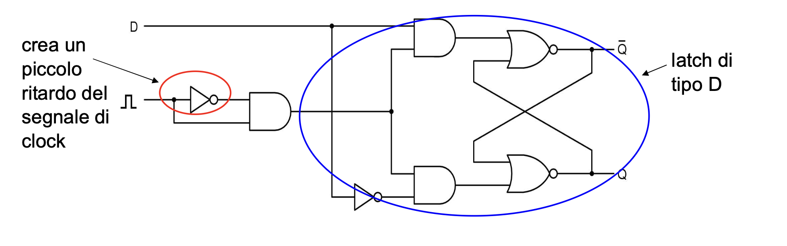
Flip-Flop Master-Slave
Le Doppie Porte della Banca Il metodo più robusto per disconnettere ingresso e uscita è mettere due Latch D in serie, comandati da Clock opposti:
Fase 1 (Clock Alto): Il Master riceve il Clock normale ed è aperto (legge l'ingresso D). Lo Slave riceve il Clock invertito da una porta NOT ed è chiuso. Il dato entra nella prima stanza ma l'uscita Q è bloccata.
Fase 2 (Il Fronte): Quando il Clock scende a 0, il Master si chiude (intrappolando il valore). Nello stesso istante lo Slave si apre e lascia uscire il dato in Q.
Le due porte non sono mai aperte contemporaneamente! Questo rende il Flip-Flop sicurissimo per i circuiti ad anello.
Fronte di Discesa vs Fronte di Salita Il modo in cui colleghi la porta NOT decide l'istante di scatto:
Fronte di DISCESA (1→0): Come descritto a sinistra (Master = C, Slave = NOT C). Quando il Clock è a 1, Q non cambia perché lo Slave è bloccato. L'uscita Q si aggiorna solo quando C cade a 0.
Fronte di SALITA (0→1): Inverti la logica! Metti la porta NOT sul Master. Ora il Master cattura quando il Clock è a 0, e lo Slave "spara" fuori il dato non appena il Clock sale a 1.
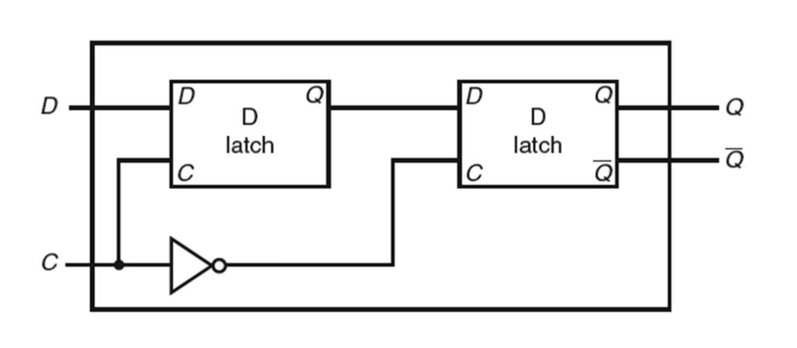
!
Il Trasporto Dati: Buffer Tri-State
1. Il Problema sul Bus
I grandi componenti hardware (CPU, RAM, Hard Disk, Scheda Video) comunicano tra loro utilizzando un unico cavo condiviso (il Bus di Sistema).
Se il Componente A tenta di inviare un 1 e il Componente B tenta di inviare uno 0 nello stesso esatto momento, avviene un cortocircuito (valore indefinito) che blocca il sistema.
Non basta "spegnere" (inviare 0) un componente per non disturbare gli altri. Quando non trasmette, deve essere fisicamente scollegato dal Bus.
2. La Soluzione: High-Z
Il Buffer Tri-State (qui sotto in figura) funge da interruttore d'accesso al bus, aggiungendo ai classici 0 e 1 un terzo stato: l'Alta Impedenza (Z), ovvero il taglio netto del filo.
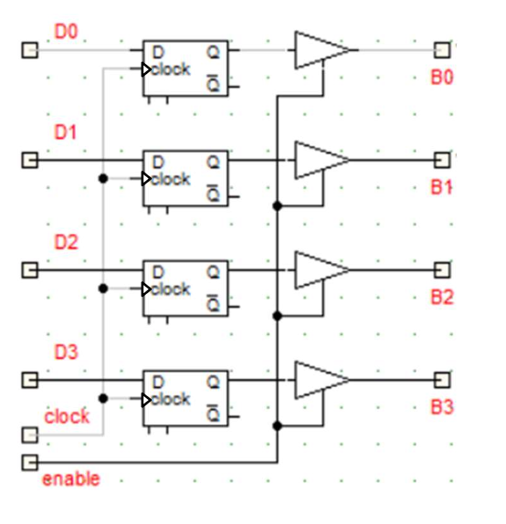
EN
D
Q
0
X
Z (Staccato)
1
0
0
1
1
1
04
Oltre il Flip-Flop: Registri e RAM
Dal singolo Flip-Flop alla memoria RAM del computer. Come salvare, selezionare e trasportare i dati in modo organizzato.
1. Il Register File (La Libreria della CPU)
Il Register File raggruppa tutti i 32 registri della CPU in un'unica "scatola nera". Di seguito vediamo lo schema del circuito interno completo in tutta la sua bellezza, per poi smontarlo nelle sue due sotto-categorie funzionali: estrazione dati e salvataggio.
Il Circuito Completo
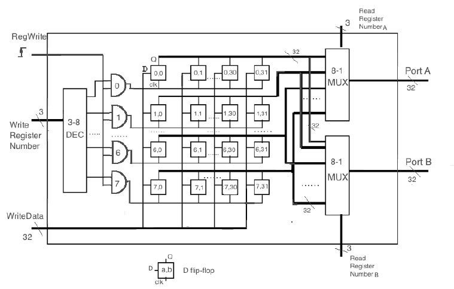
In questa "sintesi finale" didattica vediamo tutti i pezzi uniti: il Decoder abilita la scrittura in basso (attraverso le porte AND), mentre a destra tutte le uscite confluiscono nei MUX per la lettura.
⚠️ Nota sulle dimensioni (RISC-V): Per non rendere lo schema illeggibile, l'immagine usa un Decoder 3-a-8 (con bus di indirizzamento a 3 bit). In un vero processore RISC-V a 32 bit, i bus di selezione sono a 5 bit ed entrano in un colossale Decoder 5-a-32 (poiché con 5 bit possiamo esprimere \(2^5 = 32\) combinazioni, necessarie per selezionare uno dei 32 registri).
Sotto-categorie del Circuito
1. Circuito di Lettura (Asincrono)
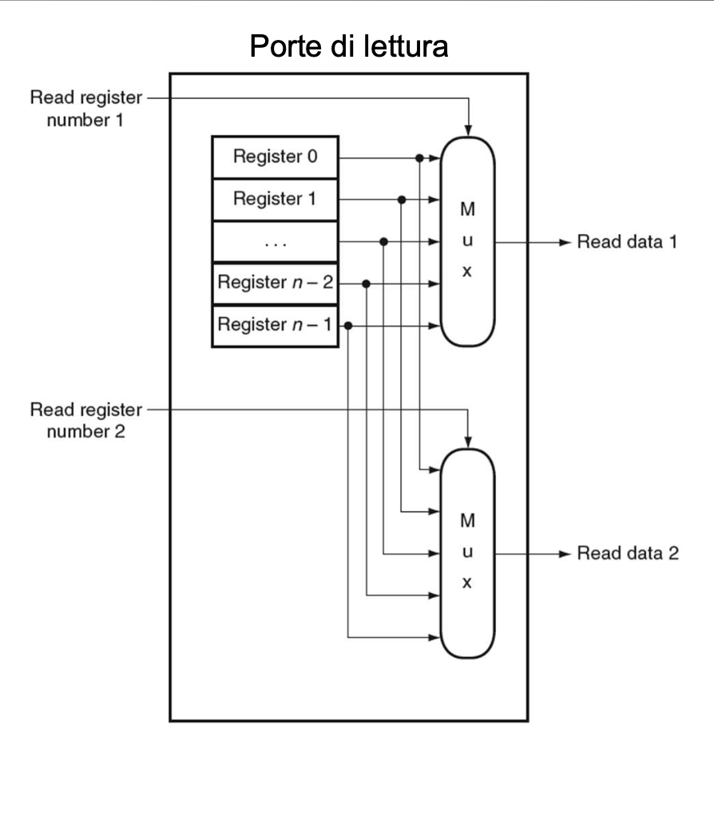
L'Imbuto (MUX)
Due Multiplexer giganti scorrono tutte le 32 uscite per incanalare verso l'ALU solo i 2 registri selezionati.
Lettura Asincrona
Non c'è bisogno del segnale di Clock per leggere! Stiamo solo "osservando" i dati senza modificarli.
Istantaneità
Non essendoci rischio di sovrascritture, i MUX propagano il dato istantaneamente verso l'ALU in totale sicurezza.
2. Circuito di Scrittura (Sincrono)
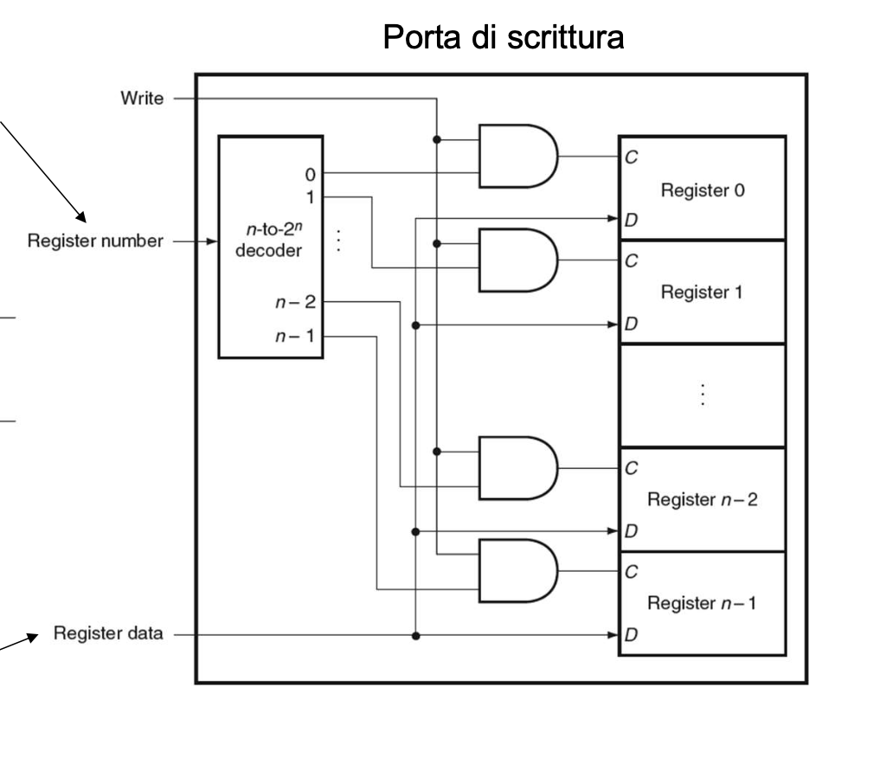
1. Broadcast del Dato
Il nuovo dato da salvare viene inviato sul cavo e raggiunge contemporaneamente gli ingressi di tutti i 32 registri.
2. Il Lucchetto (Porte AND)
Il segnale di comando Write arriva alle porte AND di tutti i registri, ma inizialmente non passa per nessuno.
3. La Chiave (Decoder)
Il Decoder invia un 1esclusivamente alla porta AND del registro bersaglio indicato dall'indirizzo.
4. Il Salvataggio
Al colpo di Clock, solo la porta AND sbloccata dal Decoder lascia passare il Write. Quel singolo registro memorizza il dato.
La Magia del Decoder in scrittura: Il dato da salvare "viaggia" in un tubo davanti a tutti i registri contemporaneamente, ma solo quello sbloccato dal Decoder vede il suo Clock andare a 1 e inghiotte il dato. Gli altri lo ignorano.
2. Verso la RAM Centrale
Ora che abbiamo capito come funziona la memoria all'interno della CPU, proviamo ad applicare lo stesso concetto su larghissima scala per costruire la memoria centrale del computer.
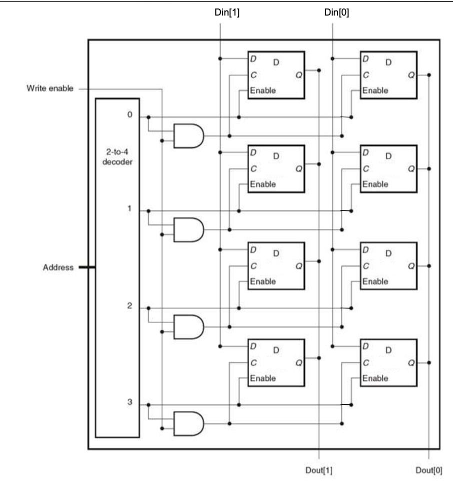
Spiegazione dello Schema
L'immagine mostra una SRAM espansa in una matrice bidimensionale. In Lettura, il Decoder a sinistra accende una specifica riga orizzontale, permettendo alle celle di riversare i propri bit sulle colonne verticali (bus di output). In Scrittura, la memorizzazione all'interno dei Flip-Flop è garantita dalla combinazione del segnale del Decoder + il Write Enable: solo quando entrambi sono attivi il dato viene sbloccato e registrato nella cella corretta.
Il Limite Assurdo del RISC-V
Se volessimo usare questo stesso identico design "piatto" per mappare tutto lo spazio degli indirizzi di un processore RISC-V a 32 bit, ci servirebbe un Decoder colossale da 32 a \(2^{32}\) (per coprire oltre 4 miliardi di righe!) con 32 colonne per il bus di output. È una cosa molto scomoda e ingegneristicamente infattibile!
SRAM vs DRAM (I Condensatori)
Inoltre, lo schema usa i Flip-Flop (tecnologia SRAM, velocissima ma ingombrante). La vera RAM dei computer si chiama DRAM: per risparmiare spazio, memorizza i bit dentro microscopici condensatori al posto dei Flip-Flop. Essendo così piccoli si scaricano velocemente, quindi la DRAM deve essere continuamente "rinfrescata" per non perdere i dati.